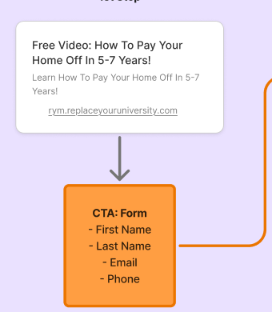
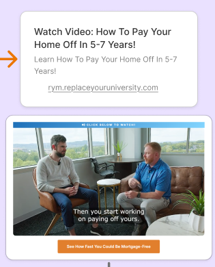
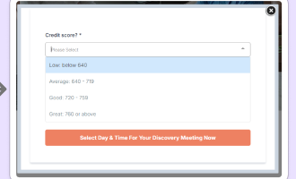
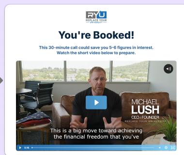

01
Confirmed
Lead
Opts into the VSL form. First & last touch attribution written; lifecycle stage set to Lead.
No automation mapped yet for this stage.
24/7 evergreen call-booking funnel
Every stage a contact moves through, from opt-in to client, with the GoHighLevel automation behind each transition. Click any automation to see its purpose, a simplified overview, and the full branching logic.
Page journey
Step 1

Ad → Opt-in page
User clicks the ad and submits the opt-in form (name, email, phone) — becomes a Lead.
Step 2

Watch page
User watches the VSL video. The qualification form sits below it.
Step 3

Qualification form
Credit score question. This is the trigger for the MQL/DQL automation.
→ View automationStep 4
Booking page
Only qualified users are redirected here to book a discovery call.
Step 5

Booking confirmation
Confirms the discovery call. Lifecycle stage moves to Opportunity.
→ View stagePage screenshots reflect the live VSL funnel as of the last review. Steps 3 and 5 connect directly to mapped CRM automations below.
CRM lifecycle
Lead
Opts into the VSL form. First & last touch attribution written; lifecycle stage set to Lead.
No automation mapped yet for this stage.
Marketing Qualified Lead
Submits the discovery financial form with qualifying answers.
Marketing Disqualified Lead
Branch off MQL — same form, non-qualifying answers (e.g. low credit). Exits the sales-qualification track.
Opportunity
Books a discovery call. MQL-gated — only qualified leads can book.
How does Opportunity become SQO?
Open question — likely a manual call disposition by the discovery specialist, not yet confirmed as an automation.
No automation mapped yet — pending confirmation.
Sales Qualified Opportunity
Discovery specialist confirms real fit: income, interest, credit, likely benefit.
No automation mapped yet for this stage.
Discovery no-show / not qualified
Open question — no pipeline stage or tag currently documented for this outcome.
No automation mapped yet — pending confirmation.
Enrollment Scheduled
SQO-gated — booked on an enrollment specialist's calendar.
No automation mapped yet for this stage.
Enrollment no-show / lost
Open question — no pipeline stage or tag currently documented for this outcome.
No automation mapped yet — pending confirmation.
Client
Closes on the enrollment call. Lifecycle stage set to Client; closed-won date recorded.
No automation mapped yet for this stage.